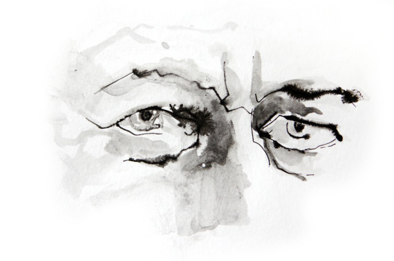
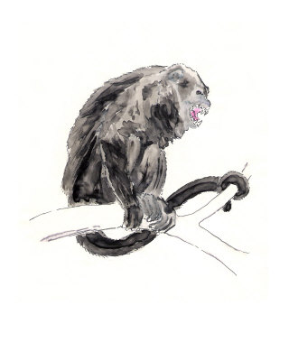
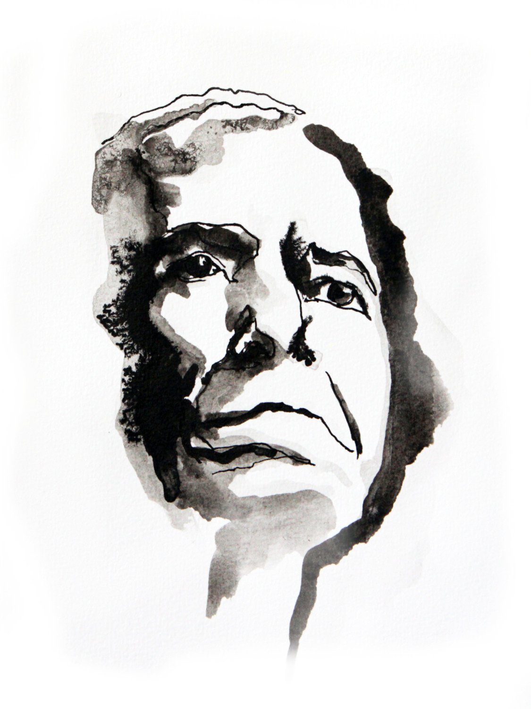

ଅନେକ ବର୍ଷ ତଳର ଏ ଘଟଣାଟି ବିବୃତ କରିବା ପଛରେ ମହାରଣାବାବୁ ଅଥବା ତତ୍କାଳୀନ ମତ୍ସ୍ୟକର୍କଟାଦି ତଥା କାରୁକଳା ବିଭାଗର ମନ୍ତ୍ରୀ ବୀରବାବୁଙ୍କୁ ବ୍ୟଙ୍ଗ କରିବା ଭଳି ନିଷ୍ଠୁର ଉଦ୍ଦେଶ୍ୟ ଯେ ମୋର ନାହିଁ, ଏତକ ଆପଣମାନେ ବିଶ୍ବାସ କରିବେ ବୋଲି ମୋର ଆଶା |
ମହାରଣାବାବୁଙ୍କର ଯଥେଷ୍ଟ ସମ୍ପତ୍ତି-ବା.ଡ଼ି ଥିଲା | ପ୍ରାୟ ପଚିଶ ଖଣ୍ଡି ଗ୍ରାମ ସମନ୍ବିତ ଆମ ଇଲାକାରେ ତାଙ୍କର ହିଁ ଥିଲା ଏକମାତ୍ର ଦ୍ବିତଳ କୋଠାଘର | ସ୍ବାଧୀନତାର ଅବ୍ୟବହିତ ପୂର୍ବରୁ କୋଠାଘରଟି ଉପରେ ନୂଆ କରି ଚୂନ ପ୍ରଲେପ ଦିଆଯାଇଥିଲା | ସୁଶ୍ୟାମଳ ସହକାର ଗହନରୁ ସୂର୍ଯ୍ୟାଲୋକ ପ୍ରତିଫଳିତ ଘରଟି ଅଦୂରର ପଥପ୍ରାନ୍ତରକୁ ଝଲକ ଝଲକ ଶୁଭ୍ର ବିସ୍ମୟ ବିକିରଣ କରୁଥିଲା ଓ ଆଖପାଖର ଜନପଦବାସୀଙ୍କ ପକ୍ଷରେ ଏହା ଏକ ପର୍ଯ୍ୟଟନ-ଆକର୍ଷଣ ବିଶେଷ ହୋଇ ଉଠିଥିଲା | ପ୍ରାୟ ଅର୍ଦ୍ଧଶତାବ୍ଦୀ ଅନ୍ତେ ସମ୍ପାଦିତ ସେହି ପଲସ୍ତରା ଓ ଚୂନକାମ ପଛରେ ଥିବା ପ୍ରତୀକ-ତାତ୍ପର୍ଯ୍ୟ ପ୍ରତି ସଭିଏଁ ଯେ ସଜାଗ ହୋଇଉଠିବେ, ଏଥିରେ ଆଶ୍ଚର୍ଯ୍ୟ କ'ଣ !
ଜଣେ ଉଦାର, ବିବେକବନ୍ତ ଭଦ୍ରବ୍ୟକ୍ତି ଭାବରେ ମହାରଣାବାବୁ୍ଙ୍କର ଯଶ ଥିଲା | ଉତ୍ତମ ରୂପେ ବନ୍ଧୁଚର୍ଚ୍ଚା କରିବା ଥିଲା ତାଙ୍କର ଏକ ଅଦମ୍ୟ ସଉକ | ଅନତି ବୃହତ ଦୁଇଟି ପୁଷ୍କରିଣୀରେ ସେ ପ୍ରଚୁର ସୁନିର୍ବାଚିତ ମତ୍ସ୍ୟ ପୋଷଣ କରିଥିଲେ | ଗୋଶାଳାଟି ତାଙ୍କର ଥିଲା ସର୍ବଦା ଗବାକୀର୍ଣ୍ଣ | ମୋଟ ଉପରେ ସେ ଥିଲେ ଜଣେ ସୁଖୀ ଓ ଆଦର୍ଶ ଗ୍ରାମୀଣ |
ଏତିକି ବେଳେ ଭାରତବର୍ଷ ହେଲା ସ୍ବାଧୀନ | ସ୍ବାଧୀନତାର ଅବ୍ୟବହିତ ପୂର୍ବରୁ ଓ ପରେ ପରେ ବ୍ରାହ୍ମଣ-କ୍ଷତ୍ରିୟ-ବୈଶ୍ୟ-ଶୂଦ୍ର ଅଧ୍ୟୁଷିତ ଏଇ ପୁଣ୍ୟଭୂମିରେ ଏକ ନୂତନ ବର୍ଗ ଉଦ୍ଭୂତ ହେଉଥିଲେ | କହିବା ବାହୁଲ୍ୟ, ସେମାନେ ହେଲେ ଦେଶପ୍ରେମୀ ବର୍ଗ | କେଉଁ ରହସ୍ୟମୟ ନିୟମ ବଳରେ କେଜାଣି, ଦେଶାତ୍ମବୋଧଟି ସାର୍ବଜନୀନ ହେବା ପରିବର୍ତ୍ତେ ବିଶେଷ ବିଶେଷ ବ୍ୟକ୍ତିଙ୍କର ବୃତ୍ତି ରୂପରେ ତାହାର ବିକାଶ ଘଟି ପ୍ରାୟ ଏକ ଉପଜାତିର ସୃଜନରେ ତାହା ପର୍ଯ୍ୟବେଶିତ ହେଲା | ଗ୍ରାମ ଗ୍ରାମାନ୍ତରରେ ବ୍ରାହ୍ମଣ, ବୈଷ୍ଣବ ଇତ୍ୟାଦି ସାଙ୍ଗକୁ କେତେଜଣ ସ୍ଥାୟୀ ଦେଶପ୍ରେମୀ ବାସ କରିବାର ଦେଖାଗଲା |
ଏହିଭଳି ଜଣେ ଦୁଇଜଣ ଦେଶପ୍ରେମୀଙ୍କ ସମ୍ମାନାର୍ଥେ ସମ୍ପ୍ରତି ମହାରଣାବାବୁଙ୍କ ମତ୍ସ୍ୟାଳୟ ପ୍ରାୟଶଃ ଆଲୋଡ଼ିତ ହେବାର ଦେଖାଯାଉଥିଲା | ତତ୍ପରେ ଯଥାସମୟରେ ମହାରଣାବାବୁଙ୍କର ହୃଦୟ ମଧ୍ୟ ଦେଶପ୍ରେମ ଦ୍ବାରା ଆଲୋଡ଼ିତ ହେଲା | ପରବର୍ତ୍ତୀ କାଳରେ ମୁଁ ବୁଝିଥିଲି ଯେ, ଏପରିକି ସେ ବିଧାନସଭାକୁ ନିର୍ବାଚିତ ହେବାର ବାସନା ମଧ୍ୟ ପୋଷଣ କରିଥିଲେ | ଯେଉଁ ଘଟଣାର ସଂକ୍ଷିପ୍ତ ବର୍ଣ୍ଣନା ମୁଁ ଏଠାରେ ଦେବାକୁ ଯାଉଛି, ସେହିଦିଗରେ ପ୍ରସ୍ତୁତି ନିମନ୍ତେ ତାହା ଥିଲା ତଦୀୟ ପ୍ରଥମ ପଦକ୍ଷେପ | ବାଳୁତ କାଳରେ ମୁଁ ଘଟଣାଟି ଯେପରି ପର୍ଯ୍ୟବେକ୍ଷଣ କରିଥିଲି ( ମୋ ମାତୁଳାଳୟ ମହାରଣାଙ୍କ ଘରକୁ ଲାଗିଥିବା ଯୋଗୁଁ ଓ ମୁଁ ସେଠାରେ ମଧ୍ୟେ ମଧ୍ୟେ ଦୀର୍ଘକାଳ ରହୁଥିବା ଯୋଗୁଁ ) ଆଜି ଅବଶ୍ୟ ତାହା ଲିପିବଦ୍ଧ କଲାବେଳେ ମୋର ବୟସାନୁରୂପ ଦୃଷ୍ଟିଭଙ୍ଗୀର ପ୍ରଭାବ ସେଥିରେ ପ.ଡ଼ିବା ସ୍ବାଭାବିକ |
ସେତେବେଳର ନବଗଠିତ ମନ୍ତ୍ରୀମଣ୍ଡଳରେ ଡେପୁ୍ଟି ବା ସବଡେପୁଟି ମିନିଷ୍ଟର ଇତ୍ୟାଦି ପାହ୍ୟାର ସୃଜନ ହୋଇନଥିଲା | ସମସ୍ତେ ଥିଲେ ସମ୍ପୂ୍ର୍ଣ୍ଣ ମାନ୍ୟବର | ମତ୍ସ୍ୟ-କର୍କଟାଦି ତଥା କାରୁକଳା ବିଭାଗର ମନ୍ତ୍ରୀ ବୀରବାବୁଙ୍କର ଘର ଆମରି ଜିଲ୍ଲାରେ ହୋଇଥିବା ଯୋଗୁଁ ତାଙ୍କୁ ହିଁ ଏକ ବିପୁଳ ସମ୍ବର୍ଦ୍ଧନା ( ସ୍ବାଧୀନତାର ସେହି ଆଦିକାଳରେ ମନ୍ତ୍ରୀମାନଙ୍କର ଦୈନନ୍ଦିନ କାର୍ଯ୍ୟସୂଚୀର ମୁଖ୍ୟ ଅଂଶ ଥିଲା 'ସମ୍ବର୍ଦ୍ଧନା' ଗ୍ରହଣ ) ଜ୍ଞାପନ କରିବାର ବ୍ୟବସ୍ଥା କରି ସେହି ସୂତ୍ରରେ ମହାରଣାଙ୍କୁ ରାଜନୈତିକ ଦିବାଲୋକକୁ ଆଣିବାର ବ୍ୟବସ୍ଥା କଲେ ତାଙ୍କର ପ୍ରବର୍ତ୍ତକମାନେ |
ଅଚିରେ ତୋରଣମାନ ଛିଡ଼ାହେଲା | ରାସ୍ତାକୁ ପ୍ରଶସ୍ତ ଓ ପରିଚ୍ଛନ୍ନ କରାଗଲା | ମହାରଣାଙ୍କର ଏକ ଅତି ବୃହତ ପୁରୁଣା ବେତ ଚେଆରକୁ ଗାଢ଼ ନୀଳ ଓ ଲାଲ ରଙ୍ଗର ଦୁଇଟି ବଗ ଦୁଇଟି ସୁଦୃଶ୍ୟ ମତ୍ସ୍ୟ କାମୁ.ଡ଼ି ଧରିଥିବାର ସୀବନ ଚିତ୍ରସମ୍ବଳିତ କନାରେ ଆବୃତ କରାଗଲା | ପ୍ରାୟ ଏକ ପକ୍ଷ ଧରି 'ଆଦର୍ଶ' ନିମ୍ନପ୍ରାଥମିକ ବିଦ୍ୟାଳୟର ଅପରାହ୍ଣର ସମସ୍ତ ଅଧ୍ୟୟନ-ବେତ୍ରାଘାତ ଅଧିବେଶନ ସ୍ଥଗିତ ରଖାଯାଇ ବାଳକ ବାଳିକାଗଣଙ୍କୁ ସ୍ବାଗତସଙ୍ଗୀତ ଶିକ୍ଷା ଦିଆଗଲା | ସେଇ ନବଯୁଗର ନାନା ଅଦୃଷ୍ଟପୂର୍ବ ଘଟଣାମାନଙ୍କ ଭିତରେ ସେହି ସଙ୍ଗୀତଟିର ଜନ୍ମ ଅନ୍ୟତମ | କାରଣ, ତାହାର କବି ବିଦ୍ୟାଳୟର ଅବସରପ୍ରାପ୍ତ ହେଡ଼୍ ପଣ୍ଡିତ ମହୋଦୟ କାବ୍ୟ ପ୍ରଣୟନ ଦିଗରେ କୌଣସି ଅଭିଳାଷ ବା ପ୍ରେରଣାର ଦୃଷ୍ଟାନ୍ତ ବିନା ସେତେବେଳକୁ ସତଷଠି ବର୍ଷକାଳ ବଞ୍ଚି ସାରିଥିଲେ | ବାଳକ-ବାଳିକାମାନେ ବୈରାଗ୍ୟବ୍ୟଞ୍ଜକ କୀର୍ତ୍ତନ ସୁରରେ ପ୍ରତ୍ୟହ ଦୀର୍ଘସମୟବ୍ୟାପୀ ଅଭ୍ୟାସ କରିଥିବା ସେହି ସଙ୍ଗୀତର "ଘୋଷା"ଟି ମୋର ଅଦ୍ୟାବଧି ମନେଅଛି | ତାହା ହେଲା "ଆସ ହେ, ଆସ ହେ, ଆସ ହେ, ମନ୍ତ୍ରୀ ହେ! କେମନ୍ତ ସମ୍ଭାଳୁ ଅଛ ଧରିତ୍ରୀ ହେ |" ବାକି ଗୀତଟିରେ ମନ୍ତ୍ରୀଙ୍କର ଆଗମନ ହେତୁ ଗ୍ରାମର ଚତୁର୍ପାର୍ଶ୍ବସ୍ଥ ପ୍ରକୃତିରେ କିପରି ଅଭାବନୀୟ ପରିବର୍ତ୍ତନମାନ ଦେଖାଦେଇଥିଲା, ଯଥା ବିହଙ୍ଗକୁଳ କିପରି ଏକ ନିର୍ଦ୍ଦିଷ୍ଟ 'ରାଗ' ବୋଲୁଥିଲେ, ଫୁଲଗୁ.ଡ଼ିକ କିପରି ହଠାତ ବେଶି ମହକ ବିତରଣ କରୁଥିଲେ, ଏପରିକି ଖୋଦ ସୂର୍ଯ୍ୟ କିପରି ସଲଜ୍ଜ ଉଲ୍ଲାସ ପ୍ରକାଶ କରୁଥିଲେ, ତାହାର ଏକ ଧାରାବାହିକ ବିବରଣୀ ପରିବେଷଣ କରାଯାଇଥିଲା |
ଏ ଲେଖକ ଜାଣେ, ଆଜିକାଲି ମନ୍ତ୍ରୀମାନଙ୍କର ଆଉ ପୂର୍ବ ଗୌରବ ନାହିଁ; କିନ୍ତୁ ସେତେବେଳ କଥା ଅଲଗା |
ଆମେ ଅର୍ବାଚୀନ ବାଳୁତମାନେ ବହୁ ସମସ୍ୟାର ଆଲୋଚନା କରୁଥାଉଁ -- "ମନ୍ତ୍ରୀ ଖାଏ କ'ଣ ? ଭାବେ କ'ଣ ? ଶୁଏ ନା ନାହିଁ ? ତା ପେଟ କାମୁଡ଼େ ନା ନାହିଁ ?" ଇତ୍ୟାଦି |
ମୁଁ ବୁଝିପାରୁଥାଏଁ, ମହାରଣାବାବୁଙ୍କର ଉତ୍କଣ୍ଠାର ଅନ୍ତ ନଥାଏ | ପ୍ରତ୍ୟହ ମଧ୍ୟାହ୍ନରେ ସେ ଅନ୍ତତଃ ଦେଢ଼ ଘଣ୍ଟା ଶୋଉଥାନ୍ତି, କିନ୍ତୁ ମନ୍ତ୍ରୀବରଣର ଦଶବାରଦିନ ପୂର୍ବରୁ ତାଙ୍କର ସେ ଅଭ୍ୟାସ ତୁଟିଯାଇଥାଏ | ବାରମ୍ବାର ସମସ୍ତ ପ୍ରସ୍ତୁତିର ତଦାରଖ କରି ମଧ୍ୟ ତାଙ୍କର ତୃପ୍ତି ନଥାଏ |
ଅବଶେଷରେ ସେହି ମହିମାମୟ ଦିବସ ଉପନୀତ ହେଲା | ଗ୍ରାମୀଣ ଆବାଳବୃଦ୍ଧବନିତାଙ୍କ ଉଦଗ୍ରୀବ, ଉତ୍କଣ୍ଠିତ ପ୍ରତୀକ୍ଷାକୁ ସାର୍ଥକ କରି ମନ୍ତ୍ରୀଙ୍କର ଜିପ୍ ପହଞ୍ଚିଲା | ପ୍ରଥମ ତୋରଣ ପାଖରେ ହିଁ ମନ୍ତ୍ରୀ ମାଟିରେ ପଦାର୍ପଣ କରି ମହାରଣାଙ୍କର ଅତି ମୋଟ ପୁଷ୍ପମାଲ୍ୟ ଗ୍ରହଣ କଲେ | ତାଙ୍କର ତଥା ଭାରତମାତାଙ୍କର ଜୟଗାନରେ ଚତୁର୍ଦ୍ଦିଗ ଉଛୁଳି ଉଠିଲା | ଗନ୍ତବ୍ୟ ସ୍ଥାନ ଆହୁରି ଏକ ଫର୍ଲଂ ଥିବା ହେତୁ ମନ୍ତ୍ରୀଙ୍କୁ ପୁନର୍ବାର ଜିପ୍ ଆରୋହଣ କରିବାକୁ ଯେତେବେଳେ ଅନୁରୋଧ କରାଗଲା, ସେତେବେଳେ ସେ ଯାହା କହିଲେ, ତା'ର ମର୍ମାର୍ଥ ହେଲା -- ଭାଗ୍ୟ ଯଦ୍ୟପି ତାଙ୍କୁ ବଡ଼ କରିଛି, ତଥାପି ସେ ମାଟିରେ ପାଦ ରଖିବାକୁ ପସନ୍ଦ କରନ୍ତି |
ଜୀବନଦର୍ଶନମୂଳକ ଏଇ ଆକସ୍ମିକ ବିବୃତିରେ ସମସ୍ତେ ମନ୍ତ୍ରମୁଗ୍ଧ ଦେଖାଯାଇଥିଲେ | ମୁହୂର୍ତ୍ତକର ନିସ୍ତବ୍ଧତା ଭିତରେ ଗୋଟିଏ ଦୁଇଟି ସ୍ବତଃସ୍ଫୂର୍ତ୍ତ 'ଚୁ ଚୁ' ମଧ୍ୟ ଶୁଣାଯାଇଥିଲା |
ମନ୍ତ୍ରୀଙ୍କ ପାଖକୁ ଲାଗି ଚାଲିଲାବେଳେ, ବିଶେଷକରି ମନ୍ତ୍ରୀ ଯେତେବେଳେ ତାଙ୍କ ଓଜନିଆ ବାହୁଟି ଖର୍ବକାୟ ମହାରଣାଙ୍କ କୃତାର୍ଥ ସ୍କନ୍ଧଦେଶରେ ଥୋଇଦେଲେ, ସେତେବେଳେ ମହାରଣା ଦୃଶ୍ୟତଃ ରୋମାଞ୍ଚିତ ହୋଇଉଠିଥିଲେ | ସେତେବେଳେ ତାଙ୍କ ଆଖିରେ ଏକପ୍ରକାର ପ୍ରଶାନ୍ତି ( ପରବର୍ତ୍ତୀ ଜୀବନରେ ଏ ଲେଖକ ଯାହା ମୃତ୍ୟୁର କିୟତକାଳ ପୂର୍ବରୁ ଜୀବନରେ ସବୁକିଛି ପାଇଥିବା ବୃଦ୍ଧମାନଙ୍କ ଆଖିରେ ଦେଖିଛି ) ଓ ଉଦାସୀନତା ଚହଟି ଉଠୁଥାଏ ; ଯିମିତି ସେ କହୁଛନ୍ତି, ରେ ଆତ୍ମନ୍, ଏ ମର ଜୀବନରେ ଆଉ ଅଧିକ କ'ଣ -- ଅଧିକ କ'ଣ -- ଅଧିକ କ'ଣ -- ତୋର କାମ୍ୟ ଥାଇପାରେ ? ହାଃ !
ଜନତା ବିଭିନ୍ନ ଆକାର ପ୍ରକାରର ଆଁ'ଟିମାନ କରି ନିରାପଦ ଦୂରତ୍ବରୁ ଆମୂଳଚୂଳ ଶୁଭ୍ର ଅତିଥିଙ୍କୁ ଦେଖିଲାଗିଥା'ନ୍ତି | ଅଦୂରରୁ ତାଙ୍କୁ ଦେଖି ଓ ତାଙ୍କ ବ୍ୟକ୍ତିତ୍ବ, ପୁରୁଷତ୍ବ, ପ୍ରଭୁତ୍ବ ଇତ୍ୟାଦି କଥା କଳନା କରି ଆତ୍ମଗ୍ଳାନିରେ ପୀଡିତ ହେଉଥାଉଁ ଆମେ ଶିଙ୍ଘାଣିନାକିଆ, ପିଳେହି ପେଟିଆ, ଅଧାଲଙ୍ଗୁଳି ମୂଢ଼ ଗ୍ରାମୀଣ ବାଳକବାଳିକାମାନେ |
ମହାରଣାଙ୍କ କୋଠାରେ ପହଞ୍ଚି ମନ୍ତ୍ରୀ ଓ ତାଙ୍କ ଅନୁଚରବର୍ଗ ପ୍ରଚୁର ପଇଡ଼ପାଣି ପିଇଲେ | ଅଧଘଣ୍ଟାଏ ଉତ୍ତାରୁ ମଧ୍ୟାହ୍ନ ଭୋଜନ ହେଲା | ପଲାଉକୁ ବେଷ୍ଟନ କରିଥାଏ ପ୍ରାୟ କୋ.ଡ଼ିଏ ପ୍ରକାର ସୁରନ୍ଧିତ ବ୍ୟଞ୍ଜନ, ଦହି, ରାବି.ଡ଼ି ଓଗେର |
ତତ୍ପରେ ମନ୍ତ୍ରୀ ବିଶ୍ରାମ ନେଲେ | ତାଙ୍କ ବିଶ୍ରାମରେ ବ୍ୟାଘାତ ନଘଟାଇବା ନିମନ୍ତେ ପୂର୍ବ ପ୍ରସ୍ତୁତି ଅନୁସାରେ ସମଗ୍ର ଗ୍ରାମ ପ୍ରାୟ ବାକ୍ଶୂନ୍ୟ ହୋଇଗଲା | ଗ୍ରୀଷ୍ମକାଳୀନ ଦ୍ବିପହର | ତେବେ ମନ୍ତ୍ରୀଙ୍କ ପାଇଁ ଉଦ୍ଦିଷ୍ଟ କୋଠରିଟି ଉଦ୍ୟାନ ପଟର ପୁଷ୍କରିଣୀ ଉପରେ ଅବସ୍ଥିତ ଥିଲା ଓ ଉନ୍ମୁକ୍ତ ବାତାୟନ ପଥରେ ପ୍ରଚୁ୍ର ପବନ ଆସୁଥିଲା | ତିମି ସଦୃଶ ବପୁମାନ ମନ୍ତ୍ରୀ ଚାରିପରସ୍ତ ଶେଯ ଉପରେ ଶୋଇପ.ଡ଼ିଲେ |
ମହାରଣା ମୋତେ ଖୁବ୍ ସ୍ନେହ କରୁଥା'ନ୍ତି | ସେହି ସାହସରେ ତଥା ମୁଁ ଗୋଟିଏ ଦାୟିତ୍ବବାନ୍, ଶିଷ୍ଟ ବାଳକ, ଏଇ ଆତ୍ମବିଶ୍ବାସରେ ଧୀରେ ଧୀରେ ଆଗେଇ ଯାଇ ମୁଁ ମନ୍ତ୍ରୀଙ୍କ କୋଠରି ଓ ପୁଷ୍କରିଣୀ ମଧ୍ୟଭାଗରେ ଥିବା ବାରଣ୍ଡାରେ ଛିଡ଼ା ହେଲି | ଦୁର୍ଲ୍ଲଭ ବ୍ୟକ୍ତିମାନଙ୍କର ସାନ୍ନିଧ୍ୟ ଲାଭ ସେହି ବୟସରେ ମୋର ଅନ୍ୟତମ ଉଚ୍ଚାଭିଳାଷ ଥିଲା | ମନ୍ତ୍ରୀଙ୍କ ଘୁମନ୍ତ ଅବସ୍ଥା ହିଁ ସେହି ଅଭିଳାଷକୁ ଚରିତାର୍ଥ କରିବା ପାଇଁ ମୋ ପକ୍ଷରେ ପ୍ରଶସ୍ତ ଥିଲା | ଅବଶ୍ୟ ବିରାଟ ବ୍ୟକ୍ତିମାନଙ୍କ ସମ୍ପର୍କରେ ମୋ ଜୀବନରେ ପ୍ରଥମ ମୋହମୁକ୍ତି ସେଇଠାରେ ଘଟିଗଲା ; କାରଣ ଆଚମ୍ବିତ ହୋଇ ଅନୁଭବ କଲି, ଯେକୌଣସି ମରଜୀବ ଭଳି ମନ୍ତ୍ରୀ ମଧ୍ୟ ଘୁଙ୍ଗୁ.ଡ଼ି ମାରନ୍ତି !
ଉତ୍ସାହ ଓ ଉଚ୍ଚାଭିଳାଷରେ ଟିକିଏ ଭଟ୍ଟା ଅନୁଭବ କରୁଥିଲି | ଏତିକିବେଳେ କିନ୍ତୁ ଏଭଳି ଘଟଣାଟିଏ ଘଟିଗଲା, ଯାହା ଫଳରେ ମୁଁ କିଂକର୍ତ୍ତବ୍ୟବିମୂଢ଼ ହୋଇପ.ଡ଼ିଲି |
ଝରକା ଦେଇ ମୁଁ ଦେଖିଥିଲି ଯେ ଶାୟିତ ମନ୍ତ୍ରୀଙ୍କର ଅଣ୍ଡାସଦୃଶ କେଶମୁକ୍ତ ଓ ଚିକ୍କଣ ମୁଣ୍ଡରୁ ବିଯୁକ୍ତ ହୋଇ ତାଙ୍କର ଟୋପିଟି ସନ୍ନିକଟସ୍ଥ ଏକ ଟୁଲ୍ ଉପରେ ରକ୍ଷିତ ହୋଇଛି | ହଠାତ୍ ଦେଖିଲି, ଅତ୍ୟନ୍ତ ଅଭଦ୍ର ଓ ଫାଜିଲ ଭାବରେ ଖ୍ୟାତ ଝାଣ୍ଡୁ ପୋଖରୀ ସେପଟ ଉଦ୍ୟାନ ଆଡ଼ୁ ଝପଟିଆସି ଝରକା ଭିତର ଦେଇ ହାତ ବଢା଼ଇ ଟୋପିଟି ଉଠାଇ ନେଇ ଆଖିପିଛୁଳାକେ ଅନ୍ତର୍ହିତ ହୋଇଗଲା |
ମୁଁ ଚିତ୍କାର କରିପାରିଲି ନାହିଁ -- ପ୍ରଥମତଃ ଝାଣ୍ଡୁ ପ୍ରତି ମୋର ମମତା ହେତୁ ( ତା'ର ଦୁଃସାହସିକତାର ପରିଣାମ ତା'ପ୍ରତି କେତେ ଭୟାବହ ହୋଇପାରେ ସେ କଥା ଭାବି ମୋର ହୃଦୟରେ ଥରେ ଭୂମିକମ୍ପ ଅନୁଭୂତ ହୋଇଗଲା ) ; ଦ୍ବିତୀୟତଃ ମନ୍ତ୍ରୀଙ୍କ ଘୁଙ୍ଗୁ.ଡ଼ି ଓ ଟୋପି ଭିତରୁ କେଉଁଟି ଅଧିକ ମୁଲ୍ୟବାନ, ତାହା ନିର୍ଣ୍ଣୟ କରି ନ ପାରିବା ହେତୁ |
ମାମୁଁଘରକୁ ସିନା ଫେରିଆସିଲି, କିନ୍ତୁ ଅନତିବିଳମ୍ବେ ଏକ ସନ୍ତ୍ରସ୍ତ କୋଳାହଳ ଦ୍ବାରା ଆକୃଷ୍ଟ ହୋଇ ପୁନରପି ମହାରଣାଙ୍କ ପ୍ରାଙ୍ଗଣରେ ଯାଇ ଉପସ୍ଥିତ ହେଲି | ଦେଖିଲି, ବଜ୍ରାହତ ଭଳି ମହାରଣା ସ୍ତମ୍ଭିତ | ମନ୍ତ୍ରୀଙ୍କ ପି.ଏ. ସାରା ଦେହରେ ବିଛୁଆତି ଲାଗିଲା ଭଳି ଅଙ୍ଗଭଙ୍ଗୀ କରି ଘୂର୍ ଘୂର୍ ହେଉଛନ୍ତି ଓ କହୁଛନ୍ତି " ମିଷ୍ଟିରିଅସ୍ ! ମିଷ୍ଟିରିଅସ୍ ! " ଲୋକସମ୍ପର୍କ ଅଫିସର କହୁଥିଲେ " ଟୋପି ଗଲା, କଥା ନାହିଁ | କିନ୍ତୁ ଯେଉଁ ଢଙ୍ଗରେ ଗଲା, ତାହା ହିଁ ଭାବିବାର କଥା | ଷଡ଼ଯନ୍ତ୍ର, ସନ୍ଦେହ ନାହିଁ | ଦେଶର ରାଜନୀତି ଉପରେ ଏହାର ପ୍ରତିକ୍ରିୟା କ'ଣ ହେବ, କିଏ କହିବ ! " ମନ୍ତ୍ରୀ ଥିଲେ କୋଠରି ଭିତରେ ; କିନ୍ତୁ ତାଙ୍କୁ ଭେଟିବାର ବହପ କାହାରି ନଥିଲା |
ମହାରଣାଙ୍କ ଦେହରୁ ଏଡ଼େ ସାବଲୀଳ ଭାବରେ ଝାଳ ବହିପ.ଡ଼ୁଥିଲା, ମୋର ମନେ ହେଲା, ସେ ଯିମିତି ଏକ ଆଇସ୍-କ୍ରିମ୍ ଡାଙ୍ଗ ଭଳି ତରଳି ତରଳି ଶୀଘ୍ର ଶେଷ ହୋଇଯିବେ | ଝାଣ୍ଡୁ କଥା ପ୍ରକାଶ କରିବି କି ନକରିବି, ସେ ସମ୍ପର୍କରେ ମୋ ମନରେ ଯେଉଁ ଦ୍ବନ୍ଦ ରହିଥିଲା, ତାଙ୍କର ଏତାଦୃଶ ଅବସ୍ଥା ଦେଖି ସେ ଦ୍ବନ୍ଦର ଅବସାନ ହେଲା |
ଜୀବନରେ ପ୍ରଥମ ଥର ପାଇଁ ମୁଁ ଜଣେ ବୟସ୍କ ବ୍ୟକ୍ତିଭଳି ବ୍ୟବହାର କଲି | ଅଙ୍ଗୁଳି ନିର୍ଦ୍ଦେଶ କରି ମୋତେ ଅନୁସରଣ କରିବା ନିମନ୍ତେ ମହାରଣାଙ୍କୁ ସଙ୍କେତ ଦେଲି | ସୁବୋଧ ଶିଶୁଟିଏ ଭଳି ସେ ତାହା କଲେ | ବାସ୍ତବିକ ବୁ.ଡ଼ିଯାଉଥିବା ମଣିଷ କୁଟାଖିଅଟିଏ ଧରି ବର୍ତ୍ତିଯିବାକୁ ଚେଷ୍ଟା କରେ !
ଅନ୍ତରାଳରେ ମୁଁ ତାଙ୍କୁ ଝାଣ୍ଡୁ ଟୋପି ଅପହରଣ କରି ନେଇଥିବା କଥା କହିଲି | ରୋଗ ନିର୍ଣ୍ଣୟ ପାଇଁ ବହୁତ ବ୍ୟାକୁଳ ଜଣେ ରୋଗୀର ରୋଗ ଅବଶେଷରେ ନିର୍ଣ୍ଣିତ ହୋଇଥିବ, ଅଥଚ ସେ ରୋଗ ଦୁଃସାଧ୍ୟ ବୋଲି ଜଣାପ.ଡ଼ିଥିବ, ସେତେବେଳେ ତା'ର ମାନସିକ ଅବସ୍ଥା ଯାହା ହେବା କଥା, ମହାରଣାଙ୍କ ମୁହଁରେ ସେହି ଅବସ୍ଥାର ଅଭିବ୍ୟକ୍ତି ଫୁଟିଉଠିଲା | ତା'ପରେ କପାଳରୁ ଝାଳ ପୋଛି, ମୋ ଚିବୁକରେ ସସ୍ନେହ କରସ୍ପର୍ଶ କରି ସେ କହିଲେ, " ବାପା ! ତୁ ଏ କଥା କାହାକୁ କହିବୁ ନାହିଁ | ତୋତେ ମୁଁ ପରେ ଗଣ୍ଡାଏ ଲ.ଡ଼ୁ ଦେବି | "
କିନ୍ତୁ ଟୋପି ଚୋରି ବ୍ୟାପାରଟି ସମଗ୍ର ବାତାବରଣକୁ ମୃତ୍ୟୁ-ଶୀତଳ କରିଦେଲା | ଯେଉଁ ମନ୍ତ୍ରୀ ୟା ମୁହଁକୁ ତା ମୁହଁକୁ ଚାହିଁ ଅକାରଣେ ଚାମୁଚେ ହସ ଛିଟିକାଇ ଦେଉଥିଲେ, କାହା ପିଠିରେ ହାତ ମାରି ଦେଉଥିଲେ ତ କାହା ଆବେଦନ ଶୁଣି ଟିକିଏ କାଶର କୃପଣ ଆବାଜ୍ ଶୁଣାଇ ଦେଉଥିଲେ, ସେ ବର୍ତ୍ତମାନ କୋଠରିଟି ଭିତରୁ ଏଭଳି ନିର୍ବାକ, ଭୟାବହ ଗାମ୍ଭୀର୍ଯ୍ୟ ବିକିରଣ କରୁଥିଲେ ଯେ, ଆପେ ଆପେ ସେ କୋଠରି ଓ ସାଧାରଣ ମଣିଷଙ୍କ ଭିତରର ବ୍ୟବଧାନ ସମ୍ପ୍ରସାରିତ ହୋଇଯାଉଥିଲା |
ମୁଁ ମୋର ବାଳକ ବନ୍ଧୁମାନଙ୍କ ପାଖକୁ ଯାଇ ଦେଖିଲି, ସେମାନଙ୍କର ବି ଉତ୍କଣ୍ଠାର ଅନ୍ତ ନାହିଁ | ଟୋପିଚୋର ଧରାପ.ଡ଼ିଲେ ତା'ର ଫାଶୀ ଅନିବାର୍ଯ୍ୟ, ସେ ସମ୍ପର୍କରେ ଦ୍ବିମତ ନଥିଲା ; ତେବେ ଗ୍ରାମସୀମାନ୍ତର ବରଗଛରେ ବା ସହରର ଜେଲଖାନାରେ ସେ କାର୍ଯ୍ୟ ଅନୁଷ୍ଠିତ ହେବ, ତାହା ହିଁ ଥିଲା ଆଲୋଚ୍ୟ | ଆମ ଭିତରେ ଏଭଳି ଅପଗଣ୍ଡ ବି ଥିଲେ, ଯିଏ କି ଭାବୁଥିଲେ ଯେ ସେ ଟୋପିଟି ଯିଏ ପିନ୍ଧିବ ସେ ମନ୍ତ୍ରୀ ହୋଇଯିବ |
ସୂର୍ଯ୍ୟାସ୍ତର କିଯତକ୍ଷଣ ଉତ୍ତାରୁ ଅବସ୍ଥାରେ ଅଚାନକ ଉନ୍ନତି ଦେଖାଦେଲା | ମହାରଣା କୋଠରି ଭିତରକୁ ଯାଇ ମନ୍ତ୍ରୀଙ୍କୁ କ'ଣ କହିଲେ କେଜାଣି, ମନ୍ତ୍ରୀ ହସହସ ବଦନରେ ବାହାରି ଆସିଲେ | ସେଯାଏ ସେ ଯେତେପ୍ରକାରେ ହସିଥିଲେ, ତନ୍ମଧ୍ୟରୁ ଏହା ହିଁ ହେଲା ସର୍ବୋତ୍ତମ | ସେତେବେଳକୁ ତାଙ୍କ ସକାଶେ ଅଧଡଜନ ଟୋପି ଦୂରଦୂରାନ୍ତରରୁ ସଂଗୃହୀତ ହୋଇ ଆସିଯାଇଥାଏ ; କିନ୍ତୁ ନଗ୍ନ ମୁଣ୍ଡରେ ହିଁ ସେ ସୁସଜ୍ଜିତ ସଭାମଣ୍ଡପ ଆଡ଼କୁ ଆଗେଇ ଚାଲିଲେ | ମୋ ଭଳି ଅନଭିଜ୍ଞ ବାଳକ ମଧ୍ୟ ବୁଝିପାରିଲା ଯେ ତାଙ୍କର ସେହି ଚନ୍ଦାମୁଣ୍ଡରୁ ଏକଜାତୀୟ ଶହୀଦ-ଦ୍ୟୁତି ବିକିରିତ ହେଉଥିଲା |
ସଭାମଣ୍ଡପ ଆଗରେ ସେତେବେଳେ ଅନ୍ତତଃ ପାଞ୍ଚ ହଜାର ଲୋକଙ୍କ ସମାବେଶ | ମନ୍ତ୍ରୀ ଯେତେବେଳେ ମଣ୍ଡପ ଆରୋହଣ କଲେ, ସେତେବେଳେ ସେ ଏଡ଼େ ପ୍ରୀତ ଦେଖାଯାଉଥିଲେ ଯେ, ତାଙ୍କ ହସ କ୍ରମେ ବିକଶିତ ହୋଇ ତାଙ୍କର ସମଗ୍ର ମୁଣ୍ଡକୁ ଅବା ଆକ୍ରାନ୍ତ କରିସାରିଥାଏ | ମହାରଣାଙ୍କର ଭାଣିଜୀ, ଦୂରାନ୍ତରରେ ନବମ ଶ୍ରେଣୀରେ ପଢୁଥିବା ସେ ଅଞ୍ଚଳର ଏକମାତ୍ର ବାଳିକା, ଯେତେବେଳେ ମଣ୍ଡପ ଉପରକୁ ଯାଇ ମନ୍ତ୍ରୀଙ୍କୁ ଫୁଲମାଳ ପିନ୍ଧାଇଦେଲା, ସେତେବେଳେ ଆମ ଇଲାକାର ଇତିହାସରେ ଏକ ନବଯୁଗର ପ୍ରଭାତ ହେଲା କହିଲେ ଅତ୍ୟୁକ୍ତି ହେବ ନାହିଁ | କାରଣ ସର୍ବସମ୍ମୁଖରେ ଜଣେ ପ୍ରାପ୍ତବୟସ୍କା ତରୁଣୀ ଜଣେ ପୁରୁଷ ବେକରେ ମାଳା ଦେବା ଆମ ଲୋକେ ପୂର୍ବରୁ ଦେଖି ନଥିଲେ |
ତତ୍ପରେ "ଆସ ହେ, ମନ୍ତ୍ରୀ ହେ" ସଙ୍ଗୀତଟି ଦୁଇଟି ହାର୍ମୋନିୟମ, ଗୋଟିଏ ବେହେଲା ଓ ଯୋ.ଡ଼ିଏ ଖୋଳ ତଥା କରତାଳ ସଂଯୋଗରେ ବୋଲା ହେଲା | ( ଏହାର ଅଳ୍ପଦିନ ପରେ ସ୍ବର୍ଗାରୋହଣ କରିଥିବା ଉକ୍ତ ସଙ୍ଗୀତର କବି ହେଡ଼୍ପଣ୍ଡିତ ମହୋଦୟ ସେଦିନ ସଲଜ୍ଜଭାବରେ, 'ଗୀତଟି କିପରି ହୋଇଛି' ବୋଲି ଶତାଧିକ ଲୋକଙ୍କୁ ବୁଲି ବୁଲି ପଚାରିଥିଲେ | )
ଅଭ୍ୟର୍ଥନା ସମିତିର ସଭାପତିରୂପେ ଏଥର ମହାରଣାଙ୍କର ବକ୍ତୃତା ଦେବାର ସମୟ ଆସିଲା | ମୁଁ ମଞ୍ଚ ନିକଟରେ ଛିଡ଼ା ହୋଇ ଦେଖୁଥାଏଁ, ମହାରଣା ବଡ଼ ଅଖାଡ଼ୁଆ ଭାବରେ ତାଙ୍କର ହାତଗୋଡ଼ ଚାଳନା କରୁଥା'ନ୍ତି ; ଭୟ ଯୋଗୁଁ ନିଶ୍ଚୟ | ତେବେ, ଖୁବ୍ ଶୀଘ୍ର ସେ ମାଇକ୍ ଦଣ୍ଡଟିକୁ ଜାବୁ.ଡ଼ି ଧରି ସ୍ଥିରଭାବରେ ଛିଡ଼ା ହେବାକୁ ସକ୍ଷମ ହେଲେ ଏବଂ ପ୍ରାୟ ଏକ ଘଣ୍ଟାଧରି ବୀରବାବୁଙ୍କର ନାନାବିଧ ତ୍ୟାଗମୂଳକ କାର୍ଯ୍ୟକଳାପର ବିବରଣୀ ଶୁଣାଇ ସାରି ଯେଉଁମାନଙ୍କ ବିନା ମାତୃଭୂମି ବୀରବାବୁଙ୍କୁ ପାଇବାରୁ ବଞ୍ଚିତ ହୋଇଥା'ନ୍ତା, ବୀରବାବୁଙ୍କର ସେହି ସ୍ବର୍ଗୀୟ ପିତାମାତାଙ୍କୁ ଜାତି ତରଫରୁ କୃତଜ୍ଞତା ଜ୍ଞାପନ କଲେ |
ଜନତା ଆଗରେ ତାଙ୍କ ଜୀବନର ପ୍ରଥମ ପରୀକ୍ଷାରେ ସେ ସଫଳ ହେବାରୁ ମୁଁ ବେଶ୍ ଆନନ୍ଦ ଅନୁଭବ କଲି ; କିନ୍ତୁ ଏହ ପରେ ପରେ ମୁଁ ଯାହା ଶୁଣିଲି, ତାହା ମୋ ଜୀବନରେ ଚୂଡ଼ାନ୍ତ ବିସ୍ମୟକର ଅଭିଜ୍ଞତା | ପାଠକବୃନ୍ଦ ! କେଉଁ ଶୈଳୀ ସାହାଯ୍ୟରେ ସେ ଅଭିଜ୍ଞତାର ଯଥାର୍ଥ ବର୍ଣ୍ଣନା ଦେବି, ତାହା ଚିନ୍ତା କରିପାରୁ ନାହିଁ | ଅନେକେ ଅବଶ୍ୟ ମହାରଣାଙ୍କୁ ଜଣେ ପକ୍କା ରାଜନୀତିକ ଓସ୍ତାଦ ବୋଲି ମନେ କରିବେ ; କିନ୍ତୁ ମୁଁ ଜାଣେ, ଅତ୍ୟନ୍ତ ଭଲ ମଣିଷ ହିସାବରେ ସେ ଏହି ମିଥ୍ୟାପ୍ରଚାର ଟିକକ କରିଥିଲେ -- ଅବଶ୍ୟ ଅତ୍ୟନ୍ତ ଆବେଗଚାଳିତ ହୋଇ | ସେ ତାଙ୍କର କଣ୍ଠସ୍ବରକୁ ସର୍ବୋଚ୍ଚ ସ୍ତରକୁ ତୋଳି କହିଲେ, " ଭାଇ ଓ ଭଉଣୀମାନେ, ଆପଣମାନେ ସମସ୍ତେ ମାନ୍ୟବର ମନ୍ତ୍ରୀଙ୍କର ଟୋପିଟି ରହସ୍ୟମୟ ଭାବରେ ଅଦୃଶ୍ୟ ହୋଇଥିବା କଥା ଶୁଣିଛନ୍ତି | ଆପଣମାନେ ଭାବିଚନ୍ତି ତାହା ଚୋରି ହୋଇଗଲା, କିନ୍ତୁ ଭ୍ରାତା ଓ ଭଗ୍ନୀବୃନ୍ଦ ! ତାହା ଚୋରି ହୋଇନାହିଁ, ହୋଇପାରେନା ! " (କରତାଳି)
ମହାରଣା ରହସ୍ୟମୟ ହସ ହସିଦେଲେ | ମନ୍ତ୍ରୀ ତାଙ୍କର ଉପଗ୍ରହଟିଏ ଭଳି ଝଟକୁଥିବା ଆକର୍ଣ୍ଣ ଚନ୍ଦାମୁଣ୍ଡଟି ତାତ୍ପର୍ଯ୍ୟପୂର୍ଣ୍ଣ ଭଙ୍ଗୀରେ ଟୁଙ୍ଗାରିଲେ | ମହାରଣା ପୁଣି କହିଲେ, "ବାସ୍ତବିକ, ଟୋପିଟିର ହେଲା କ'ଣ ? ଗଲା କୁଆଡ଼େ ? କ'ଣ ? କୁଆଡ଼େ ? ଏତିକି ଜାଣିବା ପାଇଁ ଆପଣମାନଙ୍କର ହୃଦୟ କାନ୍ଦୁଛି | ହଁ, ନିଶ୍ଚୟ କାନ୍ଦୁଛି | ହେଇଟି ଆପଣମାନଙ୍କ ପ୍ରଶ୍ନର ଉତ୍ତର ! ଆମ ଅଞ୍ଚଳର ଜଣେ ସମ୍ଭ୍ରାନ୍ତ ବ୍ୟକ୍ତି ଟୋପିଟି ନେଇ ଯାଇଛନ୍ତି | କାହିଁକି ? ସାଇତି ରଖିବା ପାଇଁ | ହଁ ହଁ, ସାଇତି ରଖିବା ପାଇଁ | ସେ କାହିଁକି ସଂଗୋପନରେ ନେଇଗଲେ ? କାରଣ, ଜାଣି ଜାଣି ଆମ ମାନ୍ୟବର ମନ୍ତ୍ରୀ କେବେ ଦେଇ ନଥାନ୍ତେ | ସେ ମନ୍ତ୍ରୀ, ମହାନ, କିନ୍ତୁ ବିନୟରେ ତାଙ୍କୁ କିଏ ବଳିଯିବ ? ତାଙ୍କ ଟୋପିଟିକୁ ଜଣେ ପବିତ୍ର ସାମଗ୍ରୀ ଭାବରେ ସାଇତି ରଖିବାକୁ ଚାହେଁ, ଏକଥା ଜାଣି ସେ ଭଲା କେବେ ତାହା ଦିଅନ୍ତେ ? କେବେ ନୁହେଁ | "
ସହସ୍ର ସହସ୍ର ଯୋଡ଼ା ବିସ୍ମୟବିସ୍ଫାରିତ ନୟନ ଆଗରେ ମହାରଣା ଅତଃପର ନିଜ ପକେଟରୁ ଆଞ୍ଜୁଳାଏ ମୁଦ୍ରା ସମ୍ବଳିତ ଖଣ୍ଡିଏ ରୁମାଲ ବାହାର କରି ତାହା ସର୍ବସମ୍ମୁଖରେ ତୋଳିଧରି କହିଲେ, "ଭ୍ରାତା ଓ ଭଗ୍ନୀଗଣ ! ଆମ୍ଭର ସେହି ଟୋପିହସ୍ତଗତକାରୀ ବନ୍ଧୁ ଏହି ଏକଶତ ଏକଗୋଟି ମୁଦ୍ରା ମାନ୍ୟବର ମନ୍ତ୍ରୀଙ୍କ ହସ୍ତରେ ଅର୍ପଣ କରିବାକୁ ମୋତେ ଅନୁରୋଧ କରିଛନ୍ତି | ମାନ୍ୟବରଙ୍କର ଜୀବନର ବ୍ରତ ଜନତା-ଜନାର୍ଦ୍ଦନଙ୍କ ସେବାରେ ଏହା କିଞ୍ଚିତ୍ କାମ ଦେଲେ ତାଙ୍କର ଜୀବନ ଧନ୍ୟ ହେବ |"
ଶ୍ରୋତୃମଣ୍ଡଳୀର ସେତେବେଳର ଭାବାବେଗ କଥା ନ କହିଲେ ଚଳିବ | ବିପୁଳ କରତାଳି ମାଡ଼ ଭିତରେ ମହାରଣା ରୁମାଲଟି ମନ୍ତ୍ରୀଙ୍କ ହାତରେ ସମର୍ପଣ କଲେ | କ୍ରମାଗତ କରତାଳି ମାଡ଼ରେ ଏଭଳି ଏକ ଆତ୍ମଭୁଲା ପରିସ୍ଥିତି ସୃଷ୍ଟି ହେଲା ଯେ, ସ୍ବୟଂ ବୀରବାବୁ ଓ ମହାରଣା ମଧ୍ୟ କରତାଳି ଦେଇ ପକାଇଲେ |
ତା'ପରେ ଅବଶ୍ୟ ମନ୍ତ୍ରୀ ତାଙ୍କର ଅଭିଭାଷଣ ଶୁଣାଇଲେ ଦୁଇଘଣ୍ଟା ଧରି | ପରିଶେଷରେ ସେ ପୁନର୍ବାର କରତାଳି ମାଡ଼ ଭିତରେ ଘୋଷଣା କଲେ ଯେ, ଯଦ୍ୟପି ଏଇ ଧନଧାନ୍ୟପୁଷ୍ପଭରା ଦେଶରେ ଟୋପିର ଅଭାବ ନାହିଁ, ସେହି ଅଜ୍ଞାତ ଗୁଣଗ୍ରାହୀଙ୍କ ସମ୍ମାନାର୍ଥେ ସେ ସେହି ବିରାଟ ସଭାରେ ଅନାବୃତ ମସ୍ତିଷ୍କରେ ହିଁ ବସିରହିବାର ସିଦ୍ଧାନ୍ତ ଗ୍ରହଣ କରିଥିଲେ |
ଚମକର ଅବସାନ ହେବା ଉତ୍ତାରୁ ମୁଁ ମହାରଣାଙ୍କ ବୁଦ୍ଧିର ଯେତିକି ତାରିଫ୍ କଲି, ଝାଣ୍ଡୁର ଦୁଷ୍ଟାମି ସକାଶେ ତାଙ୍କୁ ଶହେ ଏକ ଟଙ୍କା ବ୍ୟୟ କରିବାକୁ ପ.ଡ଼ିଥିବାରୁ ସେତିକି ଦୁଃଖ ବି ଅନୁଭବ କଲି |
ସେ ରାତିରେ ଆମ ଇଲକାର ସମସ୍ତ ବିଶିଷ୍ଟ ଲୋକେ ମନ୍ତ୍ରୀଙ୍କ ସାନ୍ନିଧ୍ୟରେ ମହାରଣାଙ୍କ ଘରେ ଖିଆପିଆ କଲେ | ସମସ୍ତେ ବାରମ୍ବାର ମନ୍ତ୍ରୀଙ୍କ ନଗ୍ନମୁଣ୍ଡ ଆଡ଼କୁ ସସମ୍ଭ୍ରମ ଦୃଷ୍ଟିପାତ କରିବା ସଙ୍ଗେ ସଙ୍ଗେ ସେହି ମହାନ ଟୋପିଚୋର କଥା ଆଲୋଚନା କରୁଥା'ନ୍ତି |
କିନ୍ତୁ ପରଦିନ ସକାଳେ ଯେତେବେଳେ ମୁଁ ମହାରଣାଙ୍କୁ ଦେଖିଲି, ସେ ଯେ ଏକ ତୀବ୍ର ଗ୍ଳାନିବୋଧରେ ପୀ.ଡ଼ିତ, ଏତକ ବୁଝିବାକୁ ମୋର ବିଳମ୍ବ ହେଲାନାହିଁ | ମୋତେ ଦେଖିବା ମାତ୍ରେ ସେ ମୁଣ୍ଡ ତଳକୁ କରିଥିଲେ | ସେ କେବେ ମିଛ କହୁ ନଥିଲେ, ଅଥଚ ଯେତେବେଳେ କହିଲେ, ସେତେବେଳେ ହଜାର ହଜାର ନରନାରୀଙ୍କୁ ହିଁ ଏକାବେଳେକେ କହିଲେ | ଭଗବାନଙ୍କ କଥା ବାଦ୍ ଦେଲେ, ଅନ୍ତତଃ ମୁଁ ଜାଣିଥିଲି ଯେ ସେ ଆଉ ସତ୍ୟବାଦୀ ହୋଇନାହାନ୍ତି |
ମନ୍ତ୍ରୀ କିନ୍ତୁ ବଡ଼ ପ୍ରଫୁଲ୍ଲ ଦେଖାଯାଉଥାନ୍ତି | ସେ ପ୍ରଫୁଲ୍ଲତା ଅବଲୋକନ କରି, ତା'ର ପରିଣାମରେ ଆମ ଇଲାକାକୁ ଶୀଘ୍ର ପକ୍କା ରାସ୍ତା ଖୋଲିଯିବ, ସେ ଗାଁରେ ଶୀଘ୍ର ହାଇସ୍କୁଲଟାଏ -- ଏପରି କି ପ୍ରସୂତି ଭବନଟିଏ ଖୋଲିଯିବା ଅସମ୍ଭବ ନୁହେଁ ବୋଲି ଲୋକେ କଥାବାର୍ତ୍ତା ହେଉଥିଲେ |
ମହାରଣା ଯଥାବିଧି ହସହସ ହୋଇ ସବୁ ଦେଖାଶୁଣା କରୁଥିଲେ ସତ, ମୁଁ କିନ୍ତୁ ବୁଝୁଥିଲି ସେ କେଡ଼େ ବିଷାଦଗ୍ରସ୍ତ, କେଡ଼େ ଛଟ୍ପଟ୍ ହେଉଛନ୍ତି |
ଅବଶେଷରେ ମନ୍ତ୍ରୀ ବିଦାୟ ନେବାର ମୁହୂର୍ତ୍ତ ଆସିଲା | ବାହାରପଟ ବାରନ୍ଦାରେ ସମସ୍ତେ ଠୁଳ ହୋଇଥା'ନ୍ତି | ମନ୍ତ୍ରୀଙ୍କୁ ତାଙ୍କ କୋଠରି ଭିତରେ ସେ ଅଞ୍ଚଳର ବୃହତ୍ତମ କାଚ ଗ୍ଲାସଟିରେ ଦହିସର୍ବତ ପରଷା ଯାଇଥାଏ | ସେ ତାକୁ ଧୀରେ ଧୀରେ ପିଉ ପିଉ, ଦଧି ତଥା ଭାବପ୍ରବଣତାର ସଂଯୋଗରେ କଣ୍ଠ ଅଧା ଅବରୁଦ୍ଧ ହୋଇଆସୁଥିବା ସତ୍ତ୍ବେ କହିଲେ, "ବୁଝିଲ ମହାରଣା ! ହାଃ ହାଃ ! ଯାହା ଦେଖାଯାଉଛି, ହାଃ ହାଃ, ଦିନ ଆସିବ, ଯେତେବେଳେ ହାଃ ହାଃ, ଲୋକେ ମୋ ଦିହରୁ ଲୁଗାପଟା ବି ହାଃ ହାଃ, କାଢି ନେଇଯିବେ ! ହାଃ ହାଃ ଏବଂ ହାଃ ହାଃ, ମୋତେ ହୁଏତ ଉଲଗ୍ନ ହୋଇ ବୁଲିବାକୁ ପ.ଡ଼ିବ | ହାଃ ହାଃ, କିନ୍ତୁ କ'ଣ କରାଯାଏ, ହାଃ ହାଃ, ଲୋକଙ୍କ ଭଲପାଇବାକୁ ତ ଆଉ ହାଃ ହାଃ ଦବାଇ ଦିଆଯାଇ ପାରେନା, ହାଃ ହାଃ |"
ଦହିସର୍ବତ ପିଇସାରି ମନ୍ତ୍ରୀ ପୁଷ୍କରିଣୀ ପଟ ବାରନ୍ଦାକୁ ମୁହଁ ଧୋଇବାକୁ ଉଠିଗଲେ | ପାଣି ଲୋଟା ଧରି ମହାରଣା ତାଙ୍କୁ ଅନୁସରଣ କଲେ |
ସେପଟ ବାରନ୍ଦାରେ ମୋ ଛଡ଼ା ଆଉ କେହି ନଥିଲେ | ମୋର ଉପସ୍ଥିତିଟା ଯେ ଏକାନ୍ତ ଦୈବାତ୍, ତାହା ନୁହେଁ | କିୟତ୍କ୍ଷଣ ପୂର୍ବେ ଉଦ୍ୟାନ ପଟରୁ ଝାଣ୍ଡୁ ମନ୍ତ୍ରୀଙ୍କର ଅପହୃତ ଟୋପିଟି ଧରି ଖେଳି ଖେଳି ଧୀରେ ଧୀରେ ପୁଷ୍କରିଣୀ ଆଡ଼କୁ ଗତି କରୁଥିବାର ମୁଁ ଦେଖିଥିଲି | ଝାଣ୍ଡୁ ମନ୍ତ୍ରୀଙ୍କର ଦୃଷ୍ଟିଗୋଚର ନ ହେଉ, ଏହା ସେତେବେଳେ ମୁଁ ଯେଭଳି ତୀବ୍ର ଭାବରେ କାମନା କରୁଥିଲି, ଜୀବନରେ କ୍ବଚିତ କୌଣସି ଜିନିଷ ପାଇଁ ସେଭଳି କାମନା କରିଛି |
ହଁ, ମୁଁ ବୋଧହୁଏ ଏଯାଏ କହିନାହିଁ ଯେ ଝାଣ୍ଡୁ କୌଣସି ମଣିଷପିଲାର ନାମ ନୁହେଁ | ଝାଣ୍ଡୁ ଏକ ମାଙ୍କଡ଼ | ଆଳଙ୍କାରିକ ଅର୍ଥରେ ନୁହେଁ ; ଏକ ବାସ୍ତବ ଅଣ୍ଡିରା ମାଙ୍କଡ଼ | ଦନ୍ତା କବଳରୁ ତାକୁ ରକ୍ଷା କରିବା ପାଇଁ ଏକଦା ତା'ର ମା ତାକୁ କୋଳରେ ଜାକି ମହାରଣାଙ୍କ କୋଠାରେ ଆଶ୍ରୟ ନେଇଥିଲା | ମହାରଣା ଘରେ ନଥିଲେ | ତାଙ୍କର ଗୋଟିଏ ଅବିବେକୀ ପରିଚାରକ ମାଙ୍କଡ଼ୀଟିକୁ ମାରିପକାଇଲା | ମହାରଣା ଫେରିଆସି ସବୁ ଶୁଣି ଗଭୀର ଦୁଃଖରେ ପ୍ରାୟ ଦେଢ ଦିନ କିଛି ଖାଇଲେ ନାହିଁ | ଶିଶୁ ମାଙ୍କଡ଼ଟିକୁ ସେ ବହୁ ଯତ୍ନରେ ପାଳିଲେ | ଅଧୁନା ଝାଣ୍ଡୁ ନାମରେ ବିଦିତ ଉକ୍ତ ମାଙ୍କଡ଼ ଅଧା ମଣ ଅଧା ବଣ୍ୟ ହୋଇ ରହିଯାଇଛି | ମାଙ୍କଡ଼ପଲ ଦେଖିଲେ ମଣିଷଙ୍କ ଭିତରକୁ ପଳାଇ ଆସେ, ସମସ୍ତଙ୍କ ସହ ଦୁଷ୍ଟାମି କରେ, ସମସ୍ତେ ତାକୁ ସହ୍ୟ କରନ୍ତି; ଆମେ ବାଳକମାନେ ତାକୁ ସମ୍ମାନ କରୁଁ |
ମୁଁ ଆତଙ୍କିତ ହୋଇ ଦେଖିଲି, ଝାଣ୍ଡୁ ପୋଖରି ସେ ପଟରୁ ମନ୍ତ୍ରୀ ଓ ମହାରଣାଙ୍କୁ ଅନାଇ ଅନାଇ କ୍ରମେ ଆଗେଇ ଆସୁଛି | ମୁଁ ମହାରଣାଙ୍କୁ ଥରେ ଇସାରା ଦେବା ପାଇଁ ଚେଷ୍ଟା କଲି, କିନ୍ତୁ ସଫଳ ହେଲି ନାହିଁ | ଚାହୁଁଚାହୁଁ ଝାଣ୍ଡୁ ଆସି ଧପ୍କିନା ଉଭୟଙ୍କ ମଝିରେ ବସି ପଡ଼ିଲା ଓ ଟୋପିଟି ନିଜ ମୁଣ୍ଡରେ ଲଗାଇ ତା'ପରେ କାଢି ଖୁବ୍ ସୌଜନ୍ୟ ସହକାରେ ବୀରବାବୁଙ୍କ ଆଡ଼କୁ ବଢ଼ାଇଦେଲା |
ମୋ ହୃଦ୍ଯନ୍ତ୍ରର ସେତେବେଳେ ତ୍ରିଗୁଣ ଗତି | ଦେଖିଲି ମହାରଣାଙ୍କ ମୁହଁ ମୃତ୍ୟୁ-ବିବର୍ଣ୍ଣ | ସେ ଥରୁଛନ୍ତି | ମନ୍ତ୍ରୀ କହିଉଠିଲେ, "ଆରେ, ଆରେ, ଏଇଟା ଯେ ମୋହରି ଟୋପି ! ଜଣେ ଭଦ୍ରଲୋକ ପରା ନେଇଯାଇଥିଲେ ?"
ମହାରଣାଙ୍କ ମୁଖମଣ୍ଡଳର ରଙ୍ଗ ସେତେବେଳେ ଘନଘନ ବଦଳି ଯାଉଥାଏ | ସ୍ନାୟବିକ ଉତ୍ତେଜନାର ଏକ ଅସହାୟ ମୁହୂର୍ତ୍ତରେ ସେ ବଡ଼ ଅପ୍ରତ୍ୟାଶିତ କଥାଟିଏ କହି ପକାଇଲେ | ମୃତ୍ୟୁ ଘୋଟିଆସୁଥିବା ବ୍ୟକ୍ତିର ଶେଷ କଥା ପଦକ ଭଳି ଶୁଣାଗଲା, "ଆଜ୍ଞା ହଁ, ଇଏ ହେଉଛନ୍ତି ସେହି ଭଦ୍ରଲୋକ |"
ବୀରବାବୁ ଏକାନ୍ତ ଦୟନୀୟ ଭାବରେ କୌଣସି ପ୍ରକାରେ ଉଚ୍ଚାରଣ କଲେ "ଆଜ୍ଞା ? କ'ଣ କହିଲେ ??"
କିନ୍ତୁ ମହାରଣା ଆଉ କିଛି କହିବା ଅବସ୍ଥାରେ ନଥିଲେ | ସେ କାନ୍ଦି ପକାଇଲେ | ପର ମୁହୂର୍ତ୍ତରେ ବିସ୍ମୟରେ ଆଉ ଏକ ପାହାଚ ଆରୋହଣ କରି ମୁଁ ଦେଖିଲି, ମତ୍ସ୍ୟ-କର୍କଟାଦି ତଥା କାରୁକଳା ବିଭାଗର ମନ୍ତ୍ରୀ ବି କାନ୍ଦୁଛନ୍ତି |
ବିପରୀତ ପଟ ବାରନ୍ଦାରୁ ପି.ଏ.ଙ୍କ କଣ୍ଠସ୍ବର ଶୁଭିଲା, "ସାର୍ ! ଜିପ୍ ପ୍ରସ୍ତୁତ !"
ମନ୍ତ୍ରୀ ମୁହଁ ଧୋଇବାପାଇଁ ଥିବା ପୂରା ଲୋଟାକ ପାଣି ପିଇ ପକାଇଲେ ଏବଂ ଜିପ୍ ଆଡ଼କୁ ଚାଲିଲେ | ପଛେ ପଛେ ମହାରଣା ମଧ୍ୟ | ସେମାନଙ୍କ ଫୁଲାଫୁଲା ମୁଖମଣ୍ଡଳକୁ ବିଦାୟକାଳୀନ ଦୁଃଖର ପ୍ରତିକ୍ରିୟା ସୂଚକ ଭାବରେ ପାଖ ଲୋକେ ଗ୍ରହଣ କରିଥାଇପାରନ୍ତି |
ରାଜନୀତି ଦିଗରେ ମହାରଣାଙ୍କର ଅସ୍ପୃହା ଆଉ ଅଧିକ ଦୂର ଯିବା କଥା ଜଣା ନାହିଁ | ବଡ଼ ବିସ୍ମୟର କଥା ଯେ ଏକଦା ବସ୍ତ୍ରହୀନ ହୋଇ ବିଚରଣ କରିବାକୁ ପ୍ରସ୍ତୁତ ଥିବା ବୀରବାବୁ ମଧ୍ୟ ବର୍ଷ କେତୋଟି ଭିତରେ ରାଜନୀତିରେ ବିସ୍ମୃତ ହେଲେ |
ମୋର କାହିଁକି ମନେହୁଏ, ସେମାନଙ୍କ ଜୀବନର ଆଭିମୁଖ୍ୟରେ ଏତାଦୃଶ ପରିବର୍ତ୍ତନ ସହିତ ସେହି ଟୋପିଜନିତ ବ୍ୟାପାରଟିର ଗଭୀର ସମ୍ପର୍କ ରହିଛି |
********************